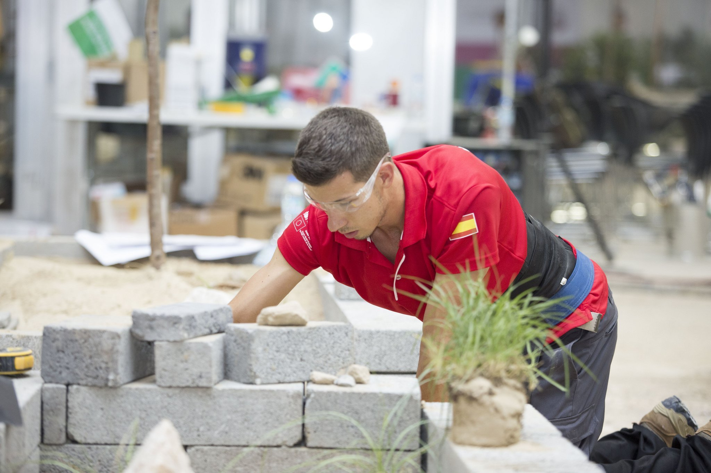

¿Le gustaría saber más?
- No dude en contactar con nuestro experto.
- Lorenzo@fpmislata.com

¿Le gustaría saber más?
La práctica de la jardinería abarca la instalación y el mantenimiento de jardines, diseño y gestión de proyectos, utilizando para ello diferentes plantas y materiales como la piedra. Incluye la realización de instalaciones eléctricas y de fontanería simple y con la instalación de elementos prefabricados como mobiliario urbano o pequeños estanques.
Ciclos formativos relacionados
Aplicaciones
Las aplicaciones de este sector incluyen, además de la instalación y el mantenimiento de jardines, el diseño y la gestión de proyectos. Esto implica el conocimiento de distintos tipos de materiales, incluidos los que provienen de la reutilización y reciclaje, y de las plantas; el uso de herramientas, equipo, maquinaria y medio tecnológicos para la instalación y mantenimiento; el uso de las técnicas en beneficio del desarrollo sostenible y también conocimientos de construcción, de instalaciones eléctricas y de fontanería simples y de elementos prefabricados como mobiliario urbano, pequeños estanques, juegos infantiles.
¿Le gustaría saber más?